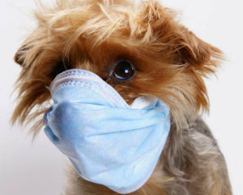

«КОМПЛЕКС ВОЛЬЕРНОГО КАШЛЯ»

Чаще всего весной и осенью от владельцев собак можно услышать
жалобы на затяжной кашель питомцев, вплоть до выделения белой пены. При
этом аппетит может быть или нормальным, или чуть сниженным.
Большинство владельцев думают, что кашель вызван тем, что животное
подавилось.
Обнаружив такой симптом, обязательно нужно обратиться в
ветеринарную клинику. Специалисты ветеринарного центра «БАГИРА»
обследуют животное, поставят диагноз и порекомендуют лечение.
Так называемый «вольерный кашель» (инфекционный
ларинготрахеобронхит) является этиологически неоднородным комплексом
первичных вирусных и вторичных бактериальных инфекций верхних
дыхательных путей.
Заражается питомец от других собак
воздушно-капельным путем на прогулке, выставке, передержке или при
переездах.
Первое проявление заболевания – это судорожный сухой кашель с
нарушением общего состояние (повышение температуры тела, вялость,
снижение аппетита) или без них. Также могут наблюдаться прозрачные
выделения с носа, воспаление глотки. Если вовремя не обратиться к
ветеринарному врачу, то заболевание прогрессирует.
Общее состояние
питомца ухудшается, отмечается лихорадка, развивается пневмония.
Очень важно исключить во время лечения контакты питомца с другими
собаками (для предотвращения распространения инфекции), обеспечить
кормление мягким слегка теплым кормом, сменить поводок на шлею (для
предотвращения дополнительного раздражения на область трахеи).
Для лечения применяются антибиотики широкого спектра действия,
иммуномодуляторы, противовоспалительные препараты и, при
необходимости, жаропонижающие. Также дополнительно назначаются
бронхолитики и раствор Люголя с глицерином (для обработки горла).
Прогноз заболевания при вовремя назначенном лечении
благоприятный. Период выздоровления длится от 7 до 14 дней.